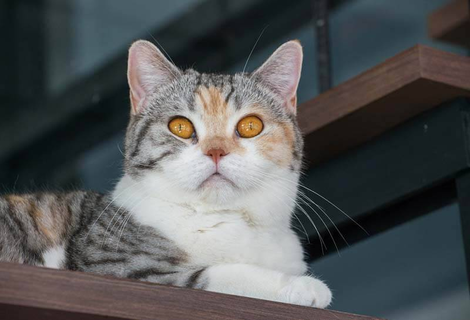

Всем привет!
Сегодня расскажу немного о кошечках)
На свете насчитывается более 200 различных попрод кошек. Мы посмотрим несколько из них:
Саванна
Американская жесткошерстная кошка
Сноу-шу
Чтобы подробнее почитать о каждой жми на картинку.
Саванна
Краткие сведения:
любознательный исследователь;
очень общительная и ласковая кошка;
не склонна к проявлению агрессии при правильном воспитании.

Американская жесткошерстная кошка
Краткие сведения:
Другое название породы — проволочная кошка;
Игривы и дружелюбны;
Редкая порода, в основном встречается в США и Канаде.
Сноу-шу
Краткие сведения:
Очень ласковая, но при этом ненавязчивая;
Жизнерадостная и энергичная, любит маленьких детей;
Бесстрашная и любопытная.